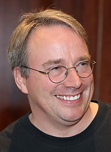

The Creator of Linux

Linus Torvalds is a Finnish-American software engineer who is the creator and principal developer of the Linux kernel, which is the kernel for a number of operating systems. He also created the version control system Git. Torvalds was born on December 28, 1969 in Helsinki, Finland. He studied computer science at the University of Helsinki, and he developed the Linux kernel as a student project in 1991. Since then, the Linux kernel has become one of the most widely used kernels in the world, powering everything from smartphones to supercomputers.
"One of the most influential people in the world."
-- Time Magazine The Famous People
Learn more about Linus Torvalds and his work: